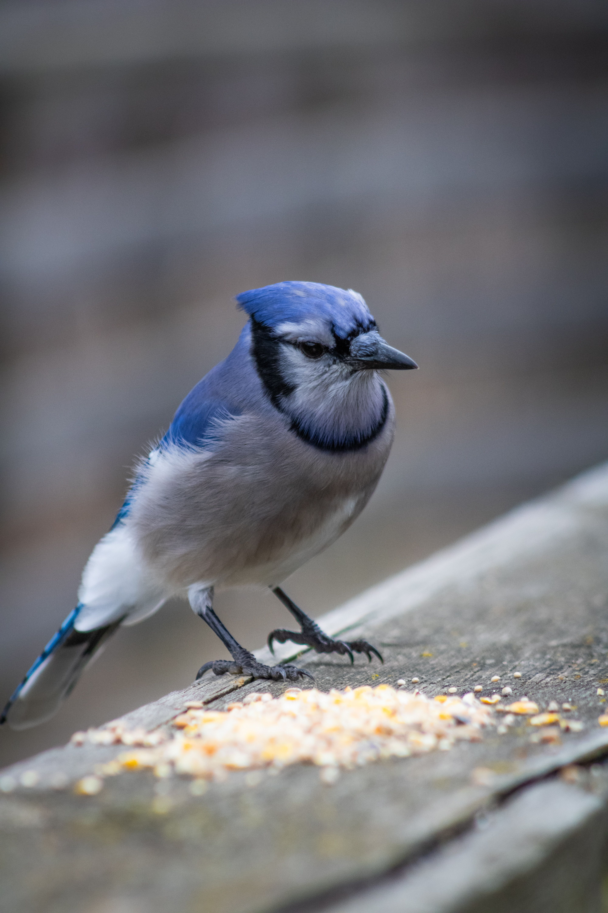

The Blue Jay is a striking North American corvid with bright blue, black and white plumage, a prominent crest and a long tail. It is an intelligent and adaptable bird found in forests, woodland edges, parks and suburban areas. Blue Jays are especially associated with acorns and other nuts, which they often carry away and cache for later use. They are social birds and have a wide variety of calls.
Blue Jay is best separated from Steller's Jay by looking at the overall shape and the strongest plumage pattern rather than one small mark. Compared with Steller's Jay, it has a different combination of colour, proportions and typical behaviour, which becomes clearer when the whole bird is visible. Canada Jay can also resemble it in some settings, but differences in bill shape, tail length, wing pattern, posture or habitat can help narrow the identification. Calls and behaviour are useful supporting clues when plumage is difficult to see, especially for birds that spend much of their time in dense vegetation. Using several features together is more reliable than identifying the bird from a single characteristic.
IOC World Bird List v15.2 — taxonomy and nomenclature, IUCN Red List of Threatened Species — global conservation status, BirdLife International — species distribution, ecology and conservation, eBird / Cornell Lab of Ornithology — identification and life-history information